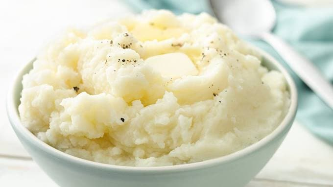

Basic Mashed Potatoes

Description:
This is a perfect recipe if you are looking for some old fashion mashed potatoes to serve on Thanksgiving.
Made with Idaho potatoes, milk, butter, and optional garlic, this is a classic recipe for an amazingly tasty holiday dish!
Ingredients:
- 2 pounds baking potatoes, peeled and quartered
- 3 cloves garlic, peeled, or to taste (optional)
- 1 cup milk
- 2 tablespoons butter
- salt and ground black pepper to taste
Steps:
- Bring a large pot of salted water to boil; add potatoes and garlic; lower the heat to a simmer until potatoes are tender; 15 to 20 minutes
- When the potatoes are almost finished, heat milk and butter in a small saucepan on low heat until the butter has melted
- Drain the potatoes and return to the pot; slowly add milk mixture and blending it with a potato smasher until potatoes are smooth and creamy
- Season with salt and pepper and enjoy!
Credit for Recipe: https://www.allrecipes.com/recipe/24771/basic-mashed-potatoes/